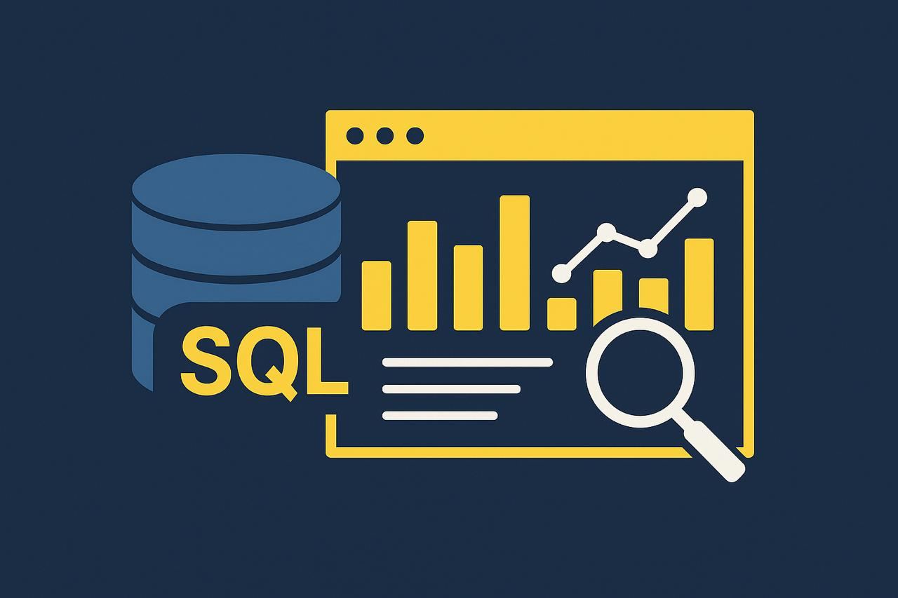
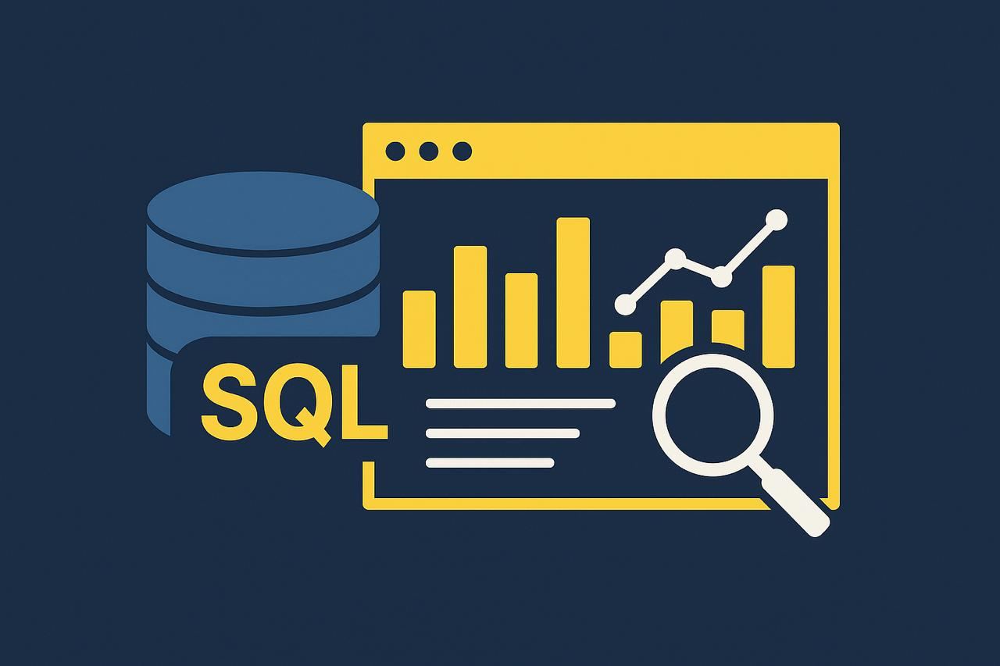
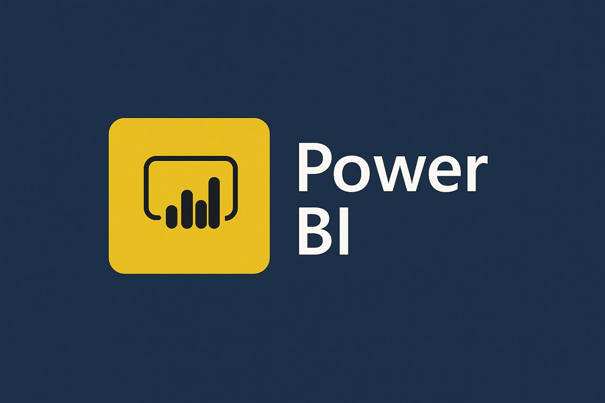

As a graduate in Information Systems with hands-on experience in Data Operations,
I’m driven by curiosity and a genuine passion for how data can power smarter decisions.
I enjoy diving into complex systems, optimizing processes, and uncovering insights that add real value.
Through both academic training and practical work, I’ve built a strong foundation in data analysis and business intelligence,
and I’m eager to contribute to organizations by turning data into strategic impact.
 

The "Sales" database was developed by extracting and integrating key components from AdventureWorks2022
This refined structure provided a focused foundation for analyzing sales performance, customer behavior, and product dynamics.
This project utilizes the Wide World Importers database to model operations of a global wholesale distributor.
Through the development of complex SQL queries, it examines key business areas such as sales performance, customer trends, product success, and supplier reach.
This project analyzes the Netflix titles dataset using Python libraries such as Pandas, Seaborn, and Matplotlib.
It explores content distribution by genre, release trends over time, and platform demographics.
Through visualizations and data-driven insights, the project highlights viewing patterns and production shifts across years.

This project presents an interactive Power BI dashboard built from sales database.
It visualizes key metrics such as revenue trends, top-performing products, customer segments, and regional performance.
The dashboard enables clear, data-driven decision-making through dynamic filters, DAX measures, and clean visual storytelling.